Gorivo i potrošnja
Točenje ili punjenje, kilometraža, cena po jedinici i pregled prosečne potrošnje. Benzin, dizel, LPG, CNG, hibridna i električna vozila.
Privatna evidencija vozila
Sve o vozilu. Bez zaboravljanja.
Gorivo, servisi, gume, troškovi, dokumenti i rokovi — pregledno, privatno i uvek uz vas.
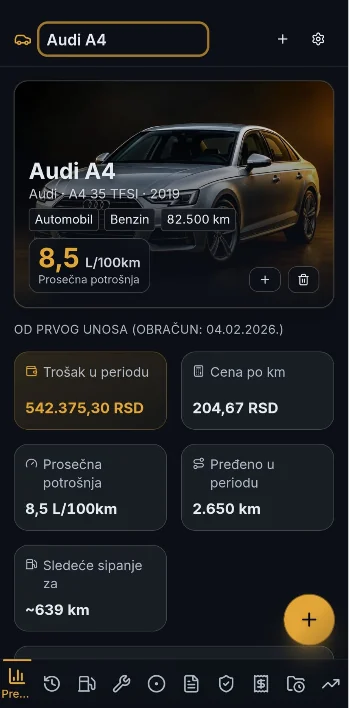
01 / Manje brige
Račun u kaseti, datum registracije u poruci, poslednji servis u beleškama — više ne morate da tražite podatke na različitim mestima.
Kompletna evidencija
Točenje ili punjenje, kilometraža, cena po jedinici i pregled prosečne potrošnje. Benzin, dizel, LPG, CNG, hibridna i električna vozila.
Istorija radova, sopstveni servisni intervali, posebne dimenzije moto guma i traktorski servisi po radnim satima.
Registracija, osiguranje, tehnički pregled, PP aparat, prva pomoć, LPG/CNG sertifikati i vinjete — sa jasnim statusima i podsetnicima.
Svi troškovi po kategoriji i periodu, u RSD, EUR, BAM, USD ili AUD, uz sačuvani kurs za svaki unos i CSV izvoz za Excel.
Recite gde ste točili, koliko i po kojoj ceni — aplikacija popuni polja, vi ih pregledate i tek onda sačuvate. Radi na svih šest jezika, a ručni unos ostaje kao do sada.
Povežite porodične ili firmene telefone QR kodom i delite izabrana vozila za nekoliko sekundi. Bez naloga i bez interneta — podaci idu direktno sa telefona na telefon.
Telefon vas sam podseti pre isteka registracije, osiguranja ili servisa — po datumu, kilometrima ili radnim satima — a widget na početnom ekranu uvek pokazuje sledeći rok.
Jedna aplikacija za svako vozilo
Verzija 1.2 — noviteti
Govorite umesto da kucate, telefoni na istoj Wi-Fi mreži dele podatke za nekoliko sekundi, a telefon vas sam podseti pre svakog roka.
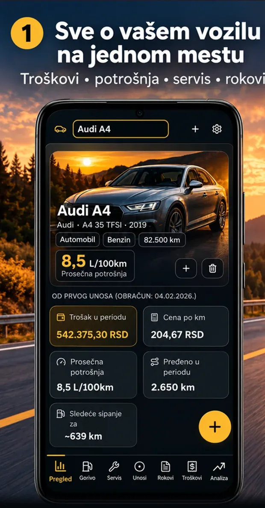
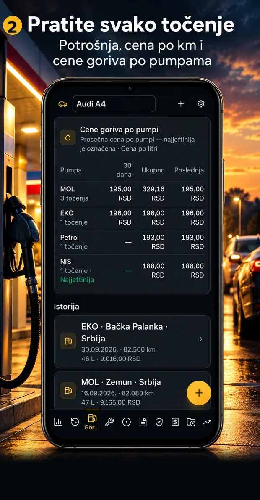
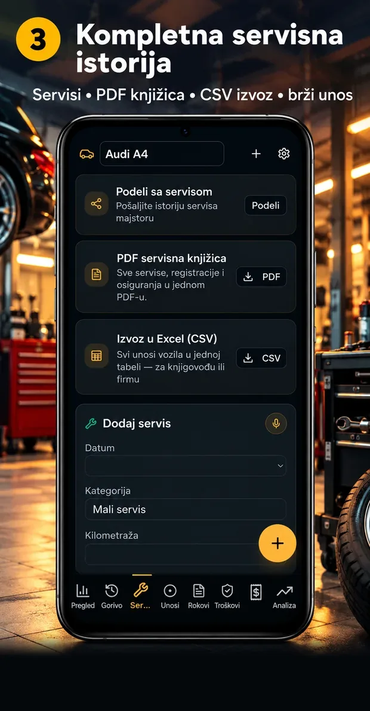
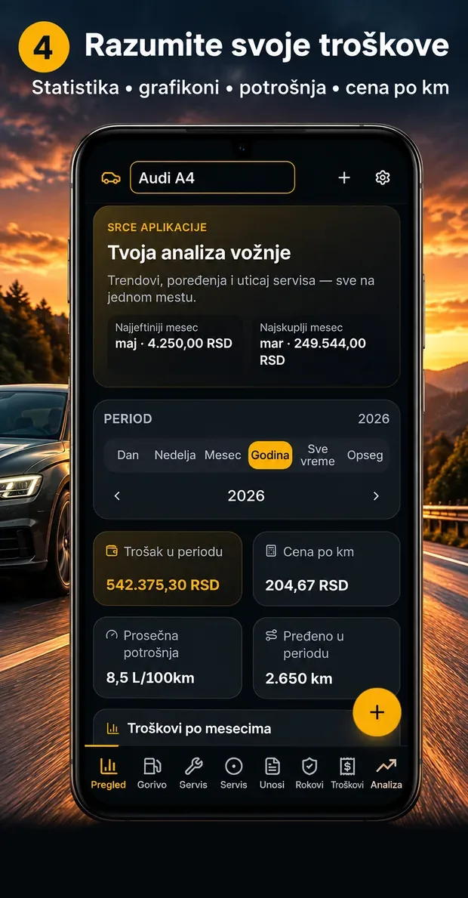
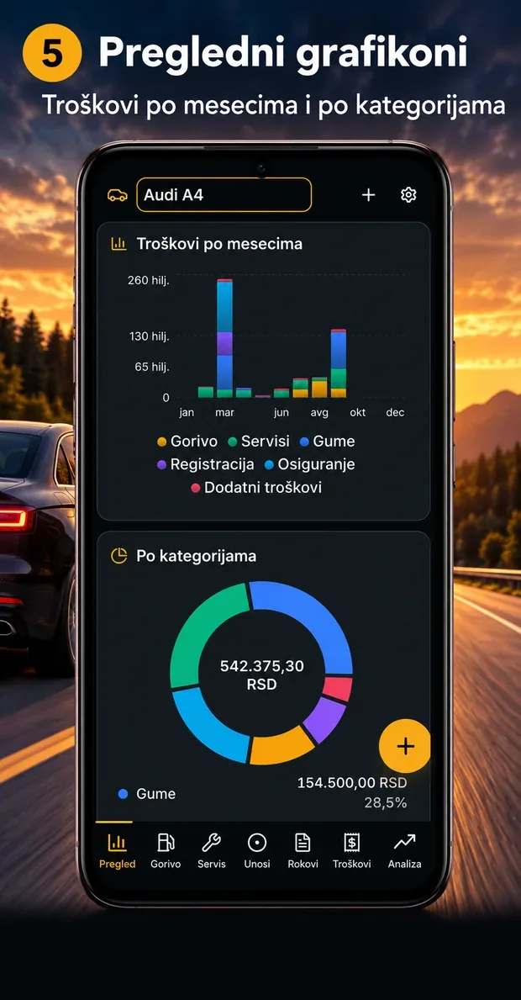
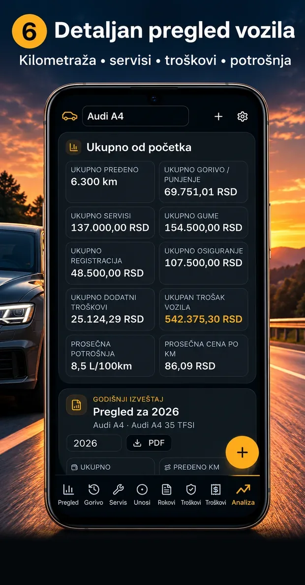
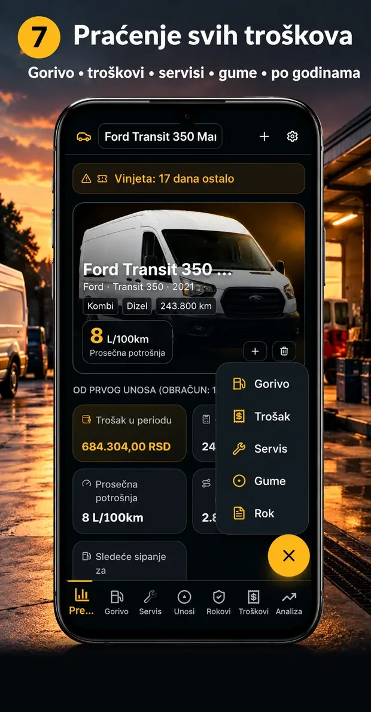
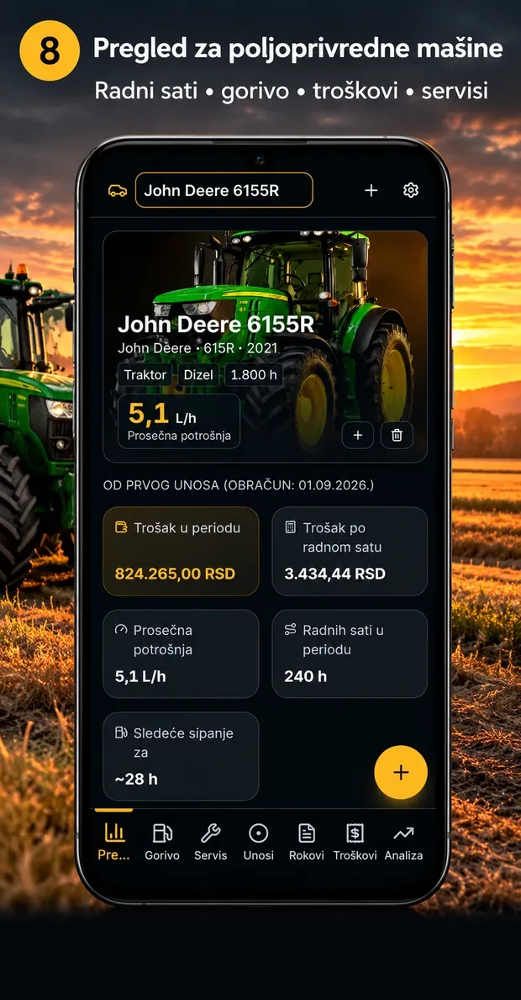
Sve novo u verziji 1.2
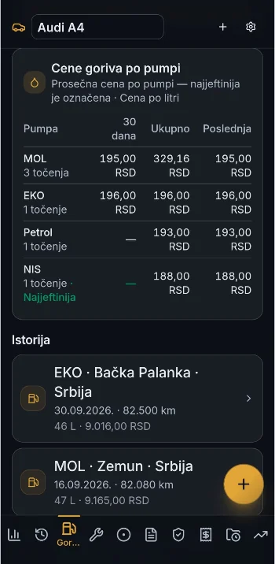
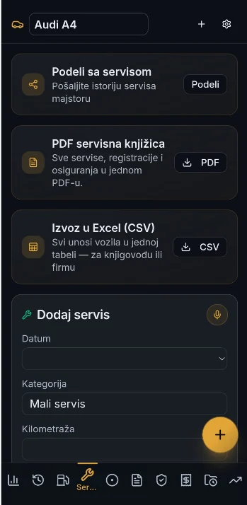
02 / Stvaran pregled aplikacije
Pratite troškove, kategorije i periode bez ručnog sabiranja. Poseban prikaz za traktore prati servis po radnim satima, dok su podaci i izveštaji uvek nadohvat ruke.
03 / Privatno po dizajnu
Bez naloga, cloud sinhronizacije, oglasa i praćenja. Evidencija se čuva lokalno na uređaju, a osnovne funkcije rade bez interneta.
Pročitajte politiku privatnostiJednostavna cena
Nema pretplate, skrivenih troškova ni reklama.
04 / FAQ
Ne. Plaćate 1,99 € jednom i dobijate kompletnu aplikaciju.
Da. Sve osnovne funkcije rade offline. Internet je opcionalan za osvežavanje kursa valuta.
Lokalno na vašem uređaju, bez cloud sinhronizacije.
Manje pamćenja. Više kontrole.
Sve što je važno za vaše vozilo, uredno na jednom mestu.